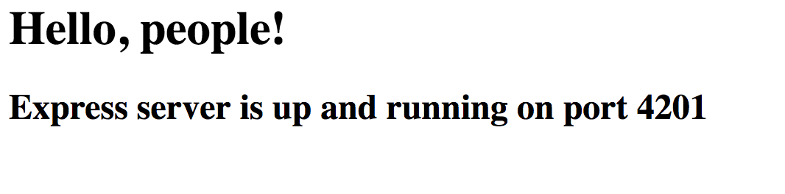

UPDATE 2017-03-13: Added content about Databases and the now-API.
This time I want to share with you an amazing project made by Zeit, the creators of socket.io
and mongoose.
Now will deploy your JavaScript (Node.js), Docker or static projects to the cloud at the speed of light. Almost all you have to do is execute one single command in the console and you will get a URL where you can see your deployed project.
I will only show how it works with a Node.js App. But the same principles apply for Docker and static projects.
You have two ways to use Now:
- CLI tool (install with
npm i -g now) - Desktop version, available for download here. It also includes the CLI tool.
After successfully logging into your account, you are ready to deploy “whatever” you want in seconds.
Logging-in with the CLI:
|
|
Desktop version welcome page:
Deploy a simple Express App
For the sake of showing how Now works, I will create a very simple Express App.
index.js:
|
|
Note: it is mandatory to have an npm start or now-start script defined in your package.json in order to deploy. For example:
|
|
(For npm build you can also have a specific now-build script. The same principle as above applies)
Now let’s deploy!
Here, again you can use the CLI or drag&drop your folder to the Desktop application.
That’s how the CLI tool looks like:
|
|
Now the Express App is publicly available under https://zeit-now-test-gedqsinqpr.now.sh.
And it took only about 2 seconds. Impressive!
Using custom deployment names
For each new deployment with now, a unique URL will be generated. Note: The old ones always remain available though until you delete them.
But maybe you do not want to have a new URL each time you deploy your project… if that’s the case, Now has you covered.
For that, you will need to create an alias:
|
|
The first parameter has to be a URL of an already existing Now deployment. You can check the list of deployments with now ls.
The second parameter is the custom name of the alias, so it generates the URL https://zeit-now-test.now.sh.
After each new deployment you can update the alias repeating the command above with the newest deployment URL.
With the premium version (which costs $14.99/mo) you can even point your deployment to a custom domain.
(Some domains as *.de are not working yet though).
View the source code of the project
There’s also the possibility to view the source code of the projects directly from the browser, adding /_src to the URL:
e.g. https://zeit-now-test.now.sh/_src.
If you have a premium version you can set your projects to private and the source code will not be shown.
For the free version all the project are by default public.
Use environmental variables
You will probably also want to use environmental variables to store some secret information. Now also covers this and lets you work with
environmental variables.
Let’s say I want to have a variable called SALUTATION and use it in the Express App we created before.
|
|
There are three possible ways to do that:
Passing them manually upon deployment
|
|
Resulting in:
Storing them in package.json, within an npm script
|
|
And then run the script:
|
|
The result is:

The other, and best way is to use secrets
Of course you do not want to push sensitive data directly to your git repository so that everyone can see it. So if the environmental
variables are storing any secret data you should only use this way for storing them.
To create a new secret just run:
|
|
Then just adapt your npm script to use the new secret (@salutation):
|
|
… and execute npm run deploy-to-now.
Voila!
Using databases
Right now you might be thinking: “yes, this is all really nice, but how can I store data in a DB?”
Well, as far as I know there is no way to deploy a DB using Now, because you basically have
no access to the server where your app is being deployed. So the best option is either
deploying your DB service separately or just using a DBaaS (Database as a Service provider.
I am doing a lot of stuff with MongoDB, so some popular services that I can recommend for it
include MongoDB Atlas or mLab.
The last one is pretty easy to configure and offers a nice free tier that gives you 500mb,
which is actually more than enough for small projects.
I am pretty sure that there are good service providers also for other Databases.
Using the API
Yes, Now also offers a nice API to interact with.
This can be useful in order to automate your deployments or integrate them with your CI/CD.
It is very well documented here and the guys at Zeit even wrote a JavaScript client that you can find on GitHub.
Conclusion
Now is a tool that has the potential to exponentially increase the workflow speed of any development team, by providing easy and blazing fast deployments. I really enjoyed playing around with it and cannot wait to implement it in real projects.
Try it out and feel free to leave your comments below!